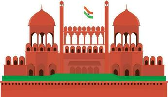
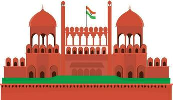

New Delhi
New Delhi, the capital city of India, is a vibrant metropolis that encapsulates the country's rich history, diverse culture, and political significance. Established as the seat of British colonial power in 1911, it officially became the capital in 1931, succeeding Calcutta. Today, New Delhi stands as a symbol of India's emergence as an independent nation.
One of the city's most iconic landmarks is India Gate, a war memorial that honors the soldiers who sacrificed their lives during World War I. The Rashtrapati Bhavan, formerly the Viceroy's House, is another architectural marvel that serves as the official residence of the President of India. These structures reflect the amalgamation of colonial and traditional Indian architectural styles, showcasing the city's historical layers.
Culturally, New Delhi is a melting pot of traditions, languages, and cuisines. The city boasts numerous museums and art galleries, such as the National Museum and the National Gallery of Modern Art, preserving and showcasing India's artistic heritage. The bustling markets like Connaught Place and Chandni Chowk offer a sensory feast, with vibrant colors, aromatic spices, and a kaleidoscope of street life.
New Delhi is also a hub for political activities, housing the Parliament of India and the Supreme Court. The city's political importance is underscored by its diplomatic enclave, Chanakyapuri, where numerous embassies are situated.
While New Delhi is a testament to India's historical roots, it is also a rapidly modernizing city. The Delhi Metro, a marvel of urban transportation, connects various parts of the city, making it easier for residents and visitors to navigate the vast expanse. The city's skyline is dotted with modern structures, reflecting its dynamic growth as a major global capital.
In essence, New Delhi encapsulates the spirit of India—bridging the gap between tradition and modernity, history and progress. It continues to evolve, serving as a microcosm of the nation's diversity and resilience on the global stage.
New Delhi, at the heart of the Indian subcontinent, pulsates with life and energy, offering a sensory experience that encapsulates the essence of India. As one navigates through the city's streets, a symphony of honking horns, street vendors' calls, and the aromatic waft of street food intermingle with the occasional echo of temple bells. This bustling environment mirrors the city's status as not just a political and historical hub, but also a vibrant center of commerce, education, and innovation.
One cannot delve into the soul of New Delhi without exploring its myriad neighborhoods, each with its unique character. Old Delhi, with its narrow lanes and ancient structures, presents a captivating journey through time. The iconic Red Fort, a UNESCO World Heritage Site, stands tall as a symbol of Mughal architectural brilliance. A rickshaw ride through the chaotic yet enchanting streets of Chandni Chowk immerses one in the lively chaos of the markets, where shops have been trading for generations.
Conversely, New Delhi's more modern areas, such as Connaught Place, reflect the city's contemporary face. Lined with trendy boutiques, international brands, and chic cafes, this circular market is a testament to the city's evolving cosmopolitan identity. Here, the historical coexists seamlessly with the modern, encapsulating the dynamic spirit of the city.
New Delhi's culinary scene is a gastronomic adventure. From the savory delights of street food, like the ubiquitous chaat and kebabs in Old Delhi, to the high-end fine dining experiences in the city's upscale neighborhoods, the food in New Delhi is a journey in itself. The city is a haven for food enthusiasts, offering a diverse range of flavors that cater to every palate.
The cultural landscape of New Delhi is enriched by its numerous festivals and events. The city hosts grand celebrations for Diwali, Holi, and Eid, among others, where the streets come alive with lights, colors, and joyous gatherings. Additionally, the annual Jaipur Literature Festival and Delhi International Arts Festival attract intellectuals, artists, and performers from across the globe, transforming the city into a cultural hub.
Education and innovation thrive in New Delhi, with prestigious institutions like the University of Delhi, Jawaharlal Nehru University, and the Indian Institutes of Technology (IIT) contributing to the city's intellectual vibrancy. The presence of these institutions fosters an environment of academic excellence and research, attracting students and scholars from various parts of the country and the world.
The city's modern infrastructure is exemplified by the Delhi Metro, a marvel of urban transportation. This expansive network connects distant corners of the city, offering a convenient and efficient mode of travel. In addition to easing congestion, the Delhi Metro serves as a symbol of India's commitment to sustainable and smart urban development.
However, like any megacity, New Delhi grapples with challenges such as air pollution and traffic congestion. Efforts are underway to address these issues, with initiatives focusing on sustainable urban development, public transportation, and green spaces. The city's evolution is a dynamic process, marked by resilience and adaptability.
In conclusion, New Delhi is a city that embodies India's past, present, and future. It is a cultural kaleidoscope, a political powerhouse, an educational hub, and a beacon of progress. With its vibrant mix of tradition and modernity, New Delhi remains a testament to India's diversity and dynamism. As the city continues to evolve, it stands as a living canvas, painting the story of a nation that is both rooted in history and reaching for the stars.